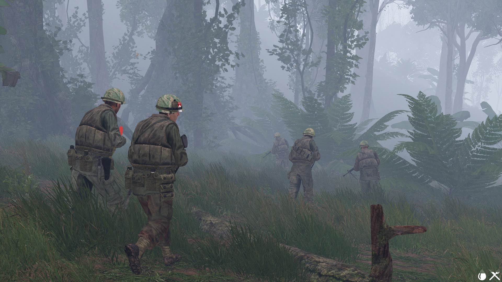
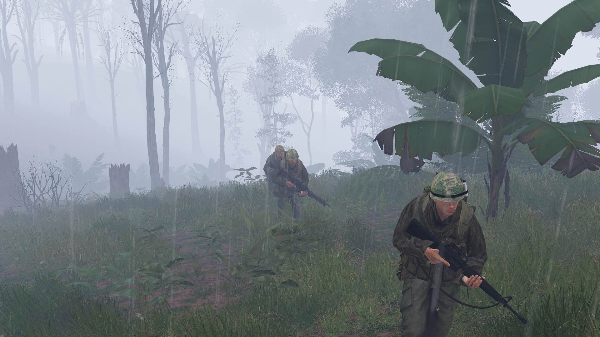
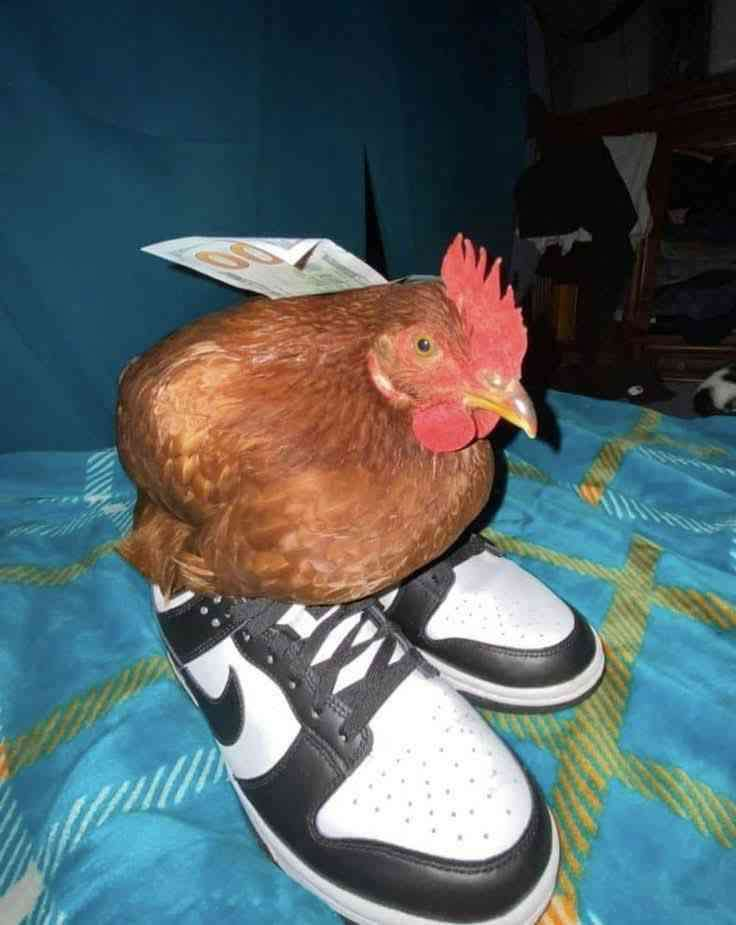

Gallery

Eyes Forward

Squid Power

Wet Walk

Wet Run

Carl
Our unit is a professional realism unit/virtual reenactment unit for Arma 3. We portray the United States Marine Corps and its combat operations during historical conflicts such as World War II, Korea, and the Vietnam War.
With several unit members currently serving in the United States Marine Corps or having served in the Marine Corps in the past, as well as thousands of hours of historical research, veteran interviews, and virtual experience dedicated to reenacting Marines in historical conflicts, we aim to provide the most accurate, realistic, and professional portrayal of the Infantry Marine during these conflicts.
Operation STARLITE - 1965 - 3rd Battalion, 3rd Marines
Coming: Summer 2025
Flew fixed-wing or rotary aircraft for reconnaissance, troop transport, medevac, and close air support missions.
The primary ground combatant, responsible for engaging the enemy with small arms and maneuvering in close combat.
Operated and maintained medium machine guns to provide suppressive fire in support of infantry units.
Specialized in demolitions and the use of rocket launchers (like the M72 LAW) to breach obstacles and destroy fortified enemy positions.
Navy medical specialist attached to Marine units, providing emergency medical care and casualty evacuation in combat zones.
Delivered indirect fire support using 60mm or 81mm mortars to engage enemy positions from covered locations.
Managed battlefield communications using radios and Morse code to relay critical information between units and command.
Led infantry units in tactical operations, making decisions on maneuver, firepower, and unit coordination.
Highly skilled in fieldcraft and marksmanship who delivers long range precision fire, on select targets, from concealed positions.
Understand our structure, values, and operations. Learn what it means to be part of the unit.
Submit a short application outlining your interests and background. We want to hear from you!
Meet one of our recruiters in Discord to discuss expectations and ask questions.
Begin your journey! Get access to our servers and start training with your team.
"I understand that I will train, lead, and support my brothers with honor. I will embrace the challenge, respect the legacy, and uphold the integrity of the unit."
"I am ready to GET SOME."
Apply Now